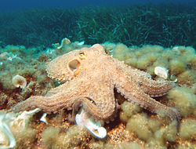
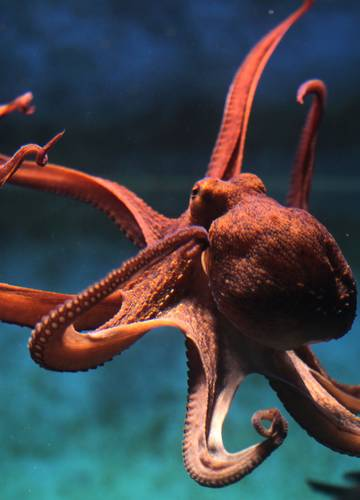
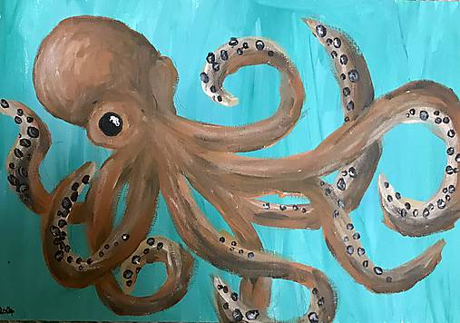

Osmonohy (iné názvy: osmonohotvaré, chobotnice, chobotnicotvaré, osemnohy; lat. Octopoda, Octopoida, Octobrachia) sú rad dvojžiabrých hlavonožcov. Majú len 8 rovnakých ramien. Zvyšok schránky prakticky úplne zaniká a rovnako chýbajú aj plutvovité prívesky. Plávajú reaktívnym pohybom, vystrekovaním vody zo svalového lievika. Medzi zástupcov patrí napr. osmonoh obyčajný (staršie chobotnica obyčajná; lat. Octopus vulgaris), bežný kozmopolitný druh. V Stredozemnom mori je častá Ozaena moschata - je to jedlý druh, ktorý má len 1 rad prísaviek na ramenách. Zvláštnou chobotnicou je malý druh Argonauta argo zo Stredozemného mora a Atlantiku. Má nepravú schránku, ktorá nie je výlučkom plášťa, ale dvoch hrubších ramien (so schránkou ostatných hlavonožcov nie je homologizovateľná). Samček je až 15-krát menší ako samica a jeho hektokotylus sa odtŕha a aktívne pláva. Najväčšou chobotnicou je Octopus punctatus zo západného pobrežia Severnej Ameriky, je veľká až 5 m.
  